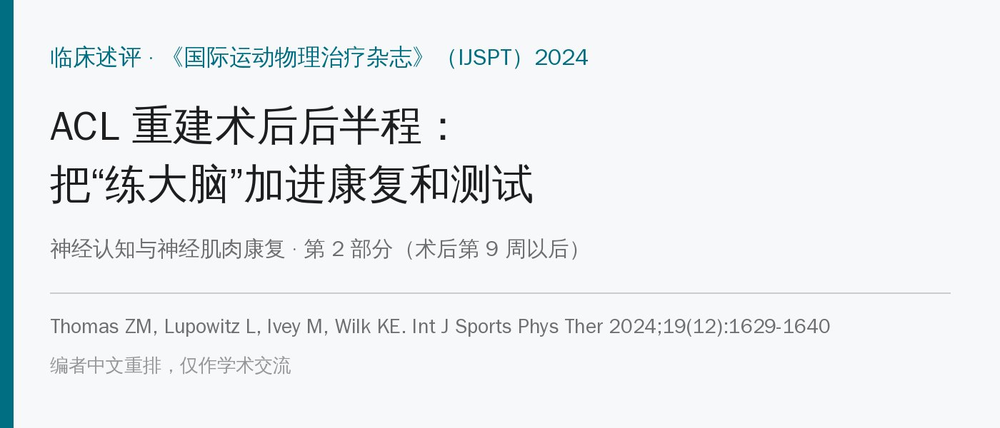
🔖原文信息（编者中文重排）
📚 文献信息
▪ Thomas ZM, Lupowitz L, Ivey M, Wilk KE. Neurocognitive and Neuromuscular Rehabilitation Techniques after ACL injury - Part 2: Maximizing Performance in the Advanced Return to Sport Phase. Int J Sports Phys Ther. 2024;19(12):1629-1640.
▪ 作者来自美国 Piedmont 骨科运动医学、Northwell Health、Champion 运动医学与美国运动医学研究所
▪ 临床述评，证据等级 5（专家意见）；本文是第 2 部分，针对术后第 9 周以后
ACL 重建做得越来越好，可回场率和再伤率并没有跟着好起来。很多人“练完了”却没被允许回场，力量、跳跃还有缺口，而且本体感觉变差、动作控制变差、更依赖眼睛——原本下意识完成的动作，变成要“想着做”。
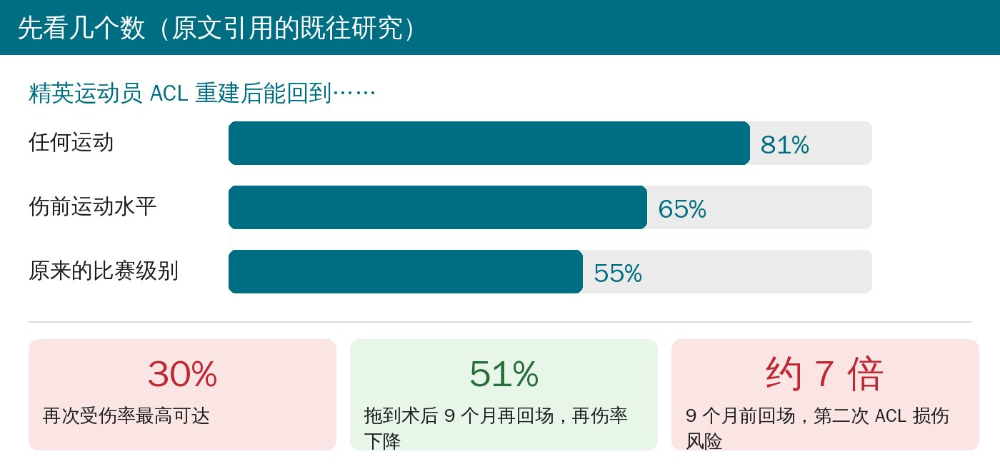
🔖回场率与再伤风险
• 髋、膝、踝的力量缺口可以持续 2 年以上；纵跳落地、90° 变向的双侧不对称在术后 2～4 年仍然存在
• 非接触 ACL 损伤的大学生运动员，受伤前的认知测试就显示反应慢、处理速度慢、视觉和言语记忆差
• 给跳跃测试加上“不可预知”的认知成分，或者让敏捷测试变成看灯、看球反应，成绩和动作质量都会变差
作者的主张：康复不只是练肌肉，要把神经可塑性、认知、视觉—运动能力一起练，才能应对比赛场上的混乱和不可预测。
作者把后半程分成三段，每一段都在传统训练上加“认知负荷”，从低干扰的封闭环境一路加到高干扰的开放环境。
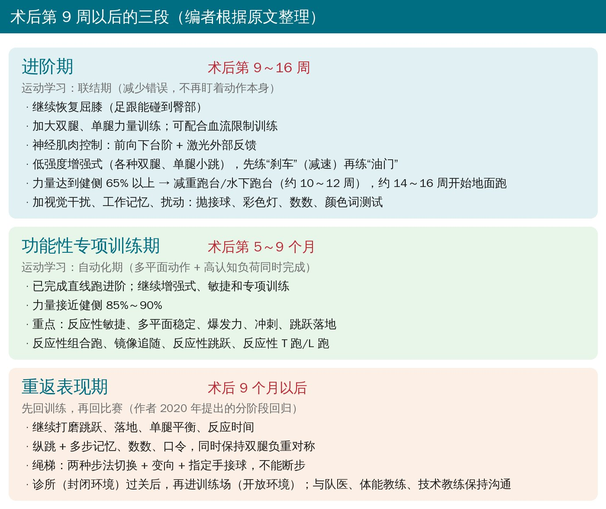
🔖三段总览
• 屈膝继续恢复到足跟碰臀；力量加大双腿和单腿训练强度
• 血流限制训练：负荷不大也能促进力量和肌肥大，适合组织仍在愈合的阶段；可以和前向下台阶这类控制练习一起做
• 激光外部反馈：下台阶时用激光指示下肢对线，让注意力放在外部目标上，而不是盯着膝盖
• 跑步：控制、力量达到健侧 65% 以上（等速或手持测力计）后，先在减重跑台或水下跑台上跑（通常 10～12 周）；负重进阶耐受良好，约 14～16 周开始地面跑。以标准为准，不只看时间——跑步后出现反应性症状会明显拖慢进度
• 骨挫伤：ACL 断裂时骨挫伤非常常见，所以冲击类训练要循序渐进，保护关节软骨
• 先刹车，再油门：低强度增强式（各种双腿、单腿小跳）之后，先评估减速能力，再练加速
• 加认知：这一期进入运动学习的“联结期”，开始加视觉干扰、工作记忆、扰动——抛接球、彩色灯、数数、颜色词测试
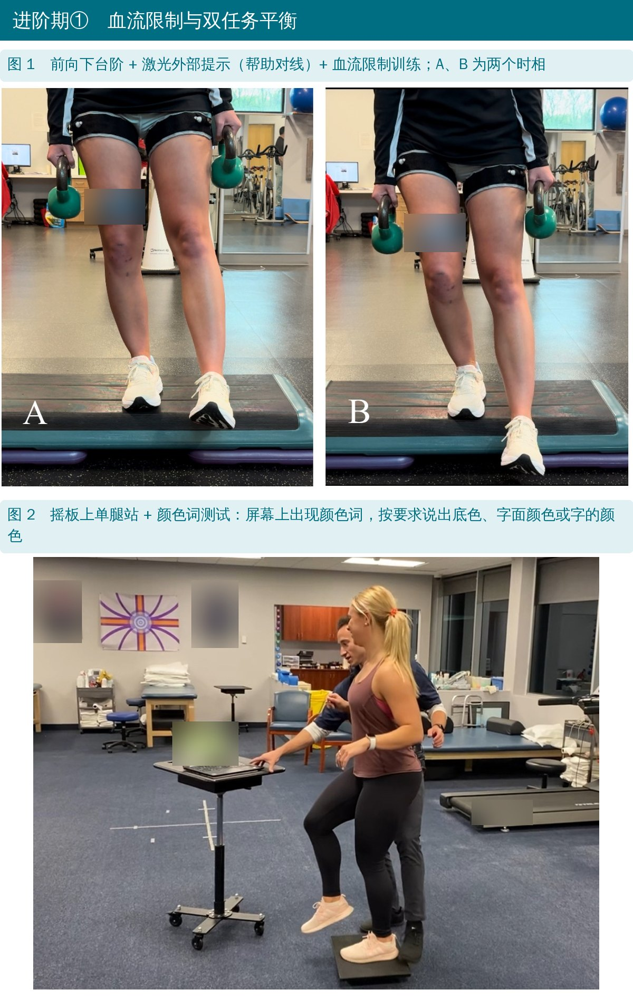
🔖原文图 1、2
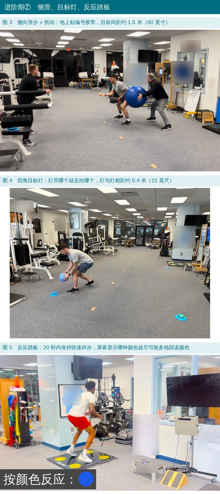
🔖原文图 3～5
颜色词测试（Stroop）的玩法：屏幕上出现一个颜色词，按治疗师要求说出底色、字面上的颜色或字本身的颜色，同时保持摇板上单腿平衡。
• 已完成直线跑进阶，继续增强式、敏捷和专项训练
• 力量要接近健侧 85%～90%，这时别把力量训练丢了
• 进入运动学习的“自动化期”：多平面动作 + 高认知负荷同时完成
• 重点：反应性敏捷、多平面稳定、爆发力、冲刺、跳跃落地
• 代表练习：反应性组合跑、反应性加减速、镜像追随、足球后退运球、四分卫反应性后撤、反应性 45° 切步、反应性纵向和侧向跳、反应性 T 跑和 L 跑、虚拟现实眼镜
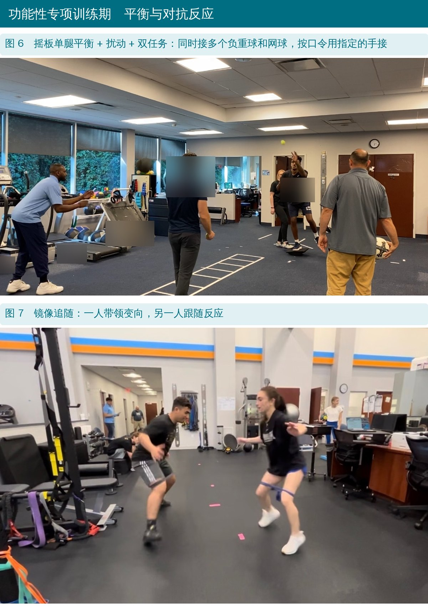
🔖原文图 6、7
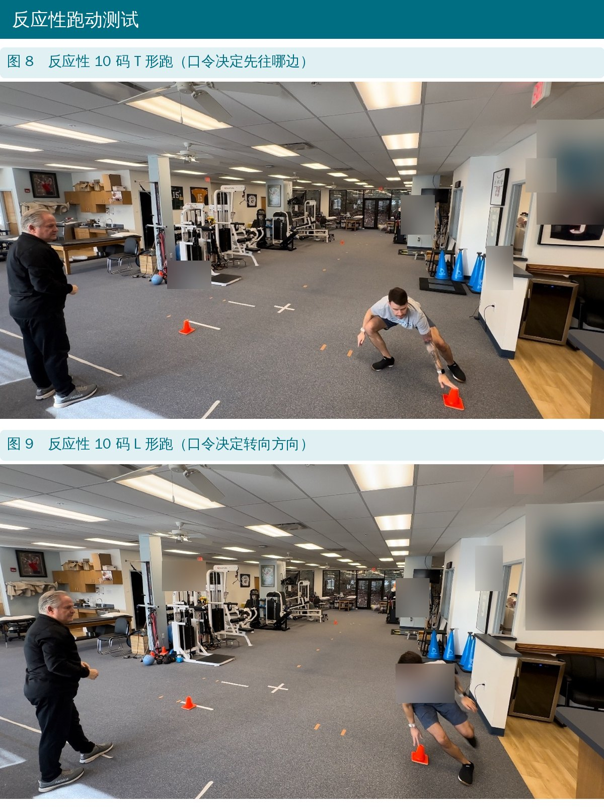
🔖原文图 8、9
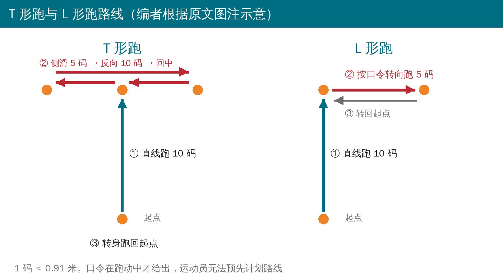
🔖路线示意
• 先回训练，再回比赛
• 纵跳：在测力台上做，看两侧对称和向心、离心力量；同时给多步记忆、数数、口令，还要保持两腿负重均衡
• 绳梯：在传统绳梯基础上，按口令切换两个平面的步法、变向、用指定的手接球；目标是不断步、少出错
• 诊所（封闭环境）里过关，再回到训练场（开放环境）做专项进阶
• 这时运动员和防护师、体能教练、技术教练相处更多，康复师要持续沟通，确保神经认知挑战不中断
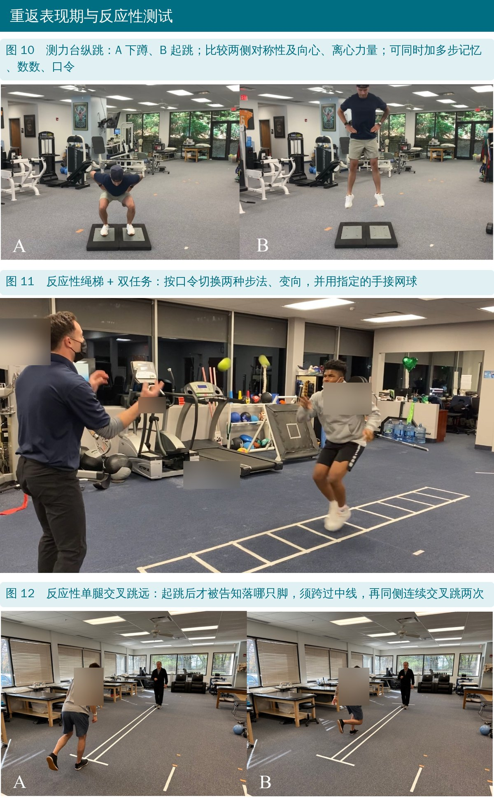
🔖原文图 10～12
原文表 1、表 2 列出的每个练习，都可以用同一套变量往上加，练的也是同一组能力。一次只改一两个变量更好控制。
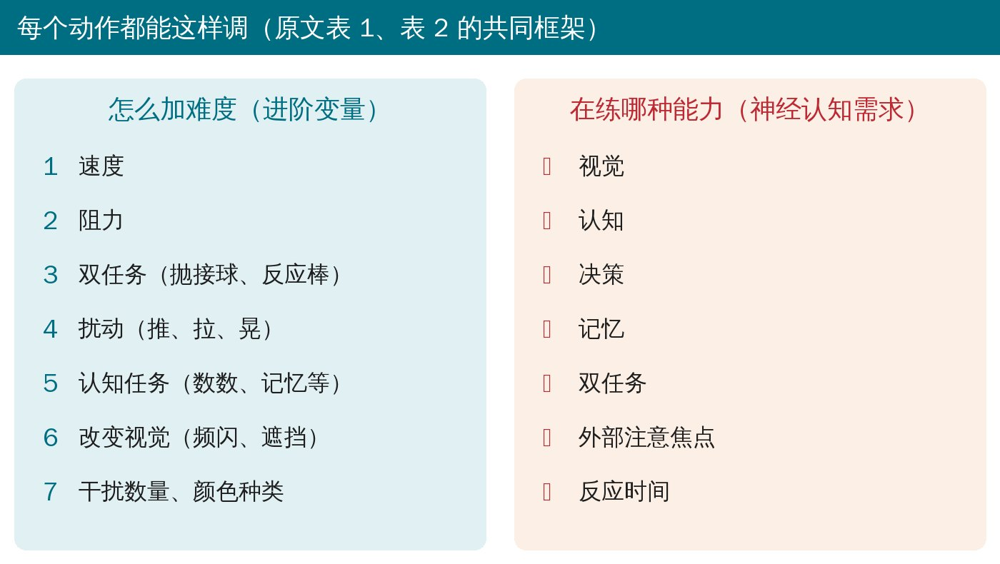
🔖进阶变量
2011 年一篇纳入 264 篇文献的综述发现，约 40% 的研究根本没写回场标准，约三成只看时间。Kyritsis 等的研究里，6 条客观标准没全部达到的运动员，再断裂风险约是达标者的 4 倍。
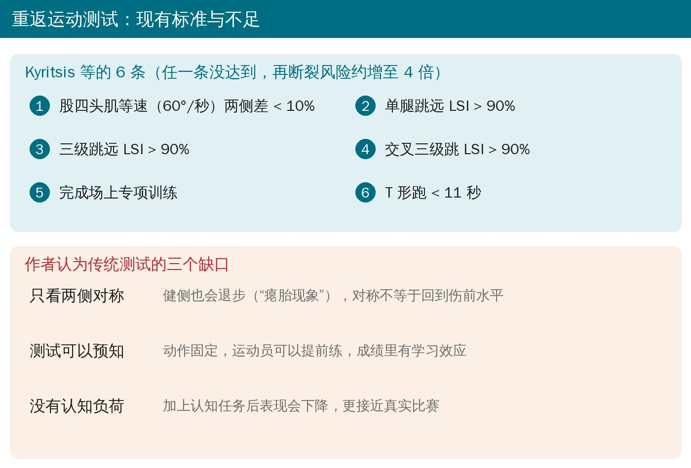
🔖现有标准与不足
作者的改进方向：在测试里加入反应和认知成分。已有的研究包括：
• 跳跃落地加“简单”“困难”双任务：认知任务越难，动作质量越差
• 神经认知单腿跳测试、视觉—认知反应三级跳：信度可以，但最远距离平均下降约 8%
• 看灯或看球做减速变向：最后一步制动力增加、出现更多“高危”动作模式
• Grooms 等提出：同一项测试分别在有、无认知任务时做，比较两者差异，算出“神经认知依赖度”，原文建议控制在 10% 以内
原文表 3 给出了完整的回场标准（见文末附录），其中几条最常用：
• 疼痛评分训练中和训练后 < 3 分，活动度对称且无痛，积液两侧差 < 1 cm
• 股四头肌、腘绳肌两侧比 ≥90%；股四头肌峰力矩/体重 > 3 Nm/kg（手持测力计）
• ACL 重返运动心理准备量表（ACL-RSI）> 55 分
• 跳跃测试两侧差 < 10% 或达到常模；T 形跑 < 11 秒
Sportsmetrics、FIFA 11、FIFA 11+、PEP 这类预防计划，综述显示能让女性运动员 ACL 损伤总体风险下降约 50%，非接触损伤下降约 67%。作者建议宣教时同时强调“能提高成绩”，而不只是“少受伤”，依从性会更好。
• 这是专家意见，不是试验：整套神经认知方案和反应性测试都没有经过随机对照试验验证，作者自己也说需要长期数据
• 很多反应性测试是新开发的，信度、效度和常模还在建立中
• 利益关系：作者之一担任文中所用目标灯品牌的医学顾问，并获得文中反应踏板品牌的教育资助；文中多款设备都点了品牌名。没有设备也能用口令、彩色锥桶、抛接球实现类似的训练
原文里对不上的地方：
• 引用 Noyes 等综述时写：40%（105 篇）没标准、32%（82 篇）只看时间、15%（40 篇）时间加主观标准、13%（55 篇）用客观标准。但 55/264 应为约 21%，而且四项加起来是 282 篇，超过了总数 264
• 骨挫伤数据：“79% 在胫骨内侧平台、83% 在胫骨内外侧平台都有”，内外侧都有的比例不可能高于只算内侧的比例；前半句“59% 为非接触损伤，98% 有骨挫伤”也表述混乱
• 表 3 写“神经认知依赖度 < 10%（按前文公式计算）”，但正文里并没有给出公式
• 表 3 里股四头肌峰力矩/体重，手持测力计写“> 3 Nm/kg”，等速一栏写“男 60%～65%、女 50%～55%”，单位不统一；腘绳肌/股四头肌比值男性一处写 66%～75%、另一处写 66%～70%
• 积液标准写成“< 1 cm LSI”，把长度单位和两侧比值混在一起
• 图 12 的图注在正文里重复出现了一次，位置也不对
• 每个传统动作都能“加脑子”：下台阶、侧滑、绳梯、小跳，加上抛接球、数数、颜色口令、目标灯，就是神经认知训练
• 按阶段加干扰：第 9～16 周低干扰（单一口令、固定节奏）；5～9 个月多平面 + 高认知负荷；9 个月后进开放环境、对抗反应
• 跑步和冲击训练看标准：力量 ≥65% 再上减重跑，耐受良好再上地面跑
• 力量别停：5～9 个月要接近 85%～90%，回场时 ≥90%
• 回场测试除了跳跃对称，再加一组带口令的反应性测试（反应性 T 跑、L 跑、交叉跳），看认知负荷下掉多少
• 回场后继续做预防热身，跟运动员讲清楚它能提高成绩
原文表 1 进阶期（第 9～16 周）神经认知练习
| 设备 | 练习 | 进阶变量 | 神经认知需求 |
|---|---|---|---|
| 口令或视觉指令 | 下台阶；侧向滑步（图 3）；绳梯；低强度增强式；颜色词测试 | 速度；阻力；双任务（抛接球、反应棒）；扰动；认知任务（数数、记忆等）；改变视觉 | 视觉；认知；决策；记忆；双任务；外部注意焦点；反应时间 |
| 目标灯 | 侧向滑步；四角（图 4）；单腿平衡菱形；单腿硬拉；绕桩运球（篮球或足球） | 速度；阻力；双任务（抛接球、反应棒）；扰动；认知任务（数数、记忆等）；改变视觉；干扰数量、颜色数 | 视觉；认知；决策；记忆；双任务；外部注意焦点；反应时间 |
| 反应踏板 | 交错步（左、右）；按颜色快速踩踏（图 5）；斜向快步；快速碎步“做/不做” | 速度；阻力；双任务（抛接球、反应棒）；扰动；认知任务（数数、记忆等）；改变视觉；干扰数量、颜色数 | 视觉；认知；决策；记忆；双任务；外部注意焦点；反应时间 |
| 视觉认知系统 | 滑步、反应、方框训练、后撤（均为速度 3 级） | 速度；阻力；双任务（抛接球、反应棒）；扰动；认知任务（数数、记忆等）；改变视觉 | 视觉；认知；决策；记忆；双任务；外部注意焦点；反应时间 |
原文表 2 功能性专项训练期（第 5～9 个月）神经认知练习
| 设备 | 练习 | 进阶变量 | 神经认知需求 |
|---|---|---|---|
| 口令或视觉指令 | 反应性组合跑；反应性加速/减速；镜像追随（图 7） | 速度；阻力；双任务（抛接球、反应棒）；扰动；认知任务（数数、记忆等）；改变视觉 | 视觉；认知；决策；记忆；双任务；外部注意焦点；反应时间 |
| 目标灯 | 侧向滑步；四角；足球后退运球；足球射门；四分卫反应性后撤；反应性 45° 切步 | 速度；阻力；双任务（抛接球、反应棒）；扰动；认知任务（数数、记忆等）；改变视觉 | 视觉；认知；决策；记忆；双任务；外部注意焦点；反应时间 |
| 反应踏板 | 反应性纵向跳；反应性侧向跳 | 速度；阻力；双任务（抛接球、反应棒）；扰动；认知任务（数数、记忆等）；改变视觉 | 视觉；认知；决策；记忆；双任务；外部注意焦点；反应时间 |
| 视觉认知系统 | 方框训练、后撤（速度 3 级） | 速度；阻力；双任务（抛接球、反应棒）；扰动；认知任务（数数、记忆等）；改变视觉 | 视觉；认知；决策；记忆；双任务；外部注意焦点；反应时间 |
| 功能测试 | 反应性 T 跑（图 8）；反应性 L 跑（图 9）；反应性三锥桶；反应性跳跃测试 | 速度；阻力；双任务（抛接球、反应棒）；扰动；认知任务（数数、记忆等）；改变视觉 | 视觉；认知；决策；记忆；双任务；外部注意焦点；反应时间 |
| 虚拟现实 | 虚拟现实眼镜 | 动作再现 | 视觉；认知；决策；双任务；外部注意焦点；反应时间 |
表中设备在原文均注明了品牌，此处略去。
原文表 3 ACL 重建术后重返运动标准
| 项目 | 评估方法 | 客观标准 |
|---|---|---|
| 医生许可 | — | — |
| 临床检查 | 疼痛（视觉模拟或数字评分） | 训练中、训练后 < 3 分 |
| 活动度（被动和主动） | 对称、无痛 | |
| 触诊 | 无疼痛主诉 | |
| 特殊检查 | 阴性、无疼痛主诉 | |
| 关节积液（围度测量/膨隆试验） | 两侧差 < 1 cm | |
| 力量 | 手持测力计 | 股四头肌、腘绳肌两侧比 ≥90%；股四头肌峰力矩/体重 > 3 Nm/kg；腘绳肌/股四头肌比值 男 66%～75%、女 > 75% |
| 等速测试 | 股四头肌、腘绳肌两侧比 ≥90%；股四头肌峰力矩/体重 男 60%～65%、女 50%～55%；腘绳肌/股四头肌比值 男 66%～70%、女 > 75%；0.2 秒发力率 > 90% | |
| 患者自评 | ACL-RSI | > 55 分 |
| 平衡/本体感觉 | 静态、动态 | 正常范围，两侧对称 |
| 步态/跑步/动作分析 | 定性分析 | 膝外翻受控；躯干对线良好 |
| 功能测试 | 跳跃测试；下肢 Y 平衡；T 跑；L 跑；测力台（跳跃、等长测试等）；反应性敏捷测试（T 跑、L 跑、跳跃） | 跳跃两侧差 < 10% 和/或达到常模；T 跑 < 11 秒；神经认知依赖度 < 10% |
欢迎关注骨科康复小黄公众号，获取更多物理治疗的专业知识！
📄参考文献：
Thomas ZM, Lupowitz L, Ivey M, Wilk KE. Neurocognitive and Neuromuscular Rehabilitation Techniques after ACL injury - Part 2: Maximizing Performance in the Advanced Return to Sport Phase. Int J Sports Phys Ther. 2024;19(12):1629-1640. doi:10.26603/001c.126270
原文以知识共享署名—非商业性使用 4.0 协议（CC BY-NC 4.0）发表。本文为非商业学术交流用的中文解读，照片引自原文图 1～12（编者加中文标注，球衣、海报、器械与屏幕文字已模糊，图 5 屏幕提示改为中文），数据卡、分期总览、进阶变量卡、路线示意与标准卡为编者中文绘制，表格为编者翻译。